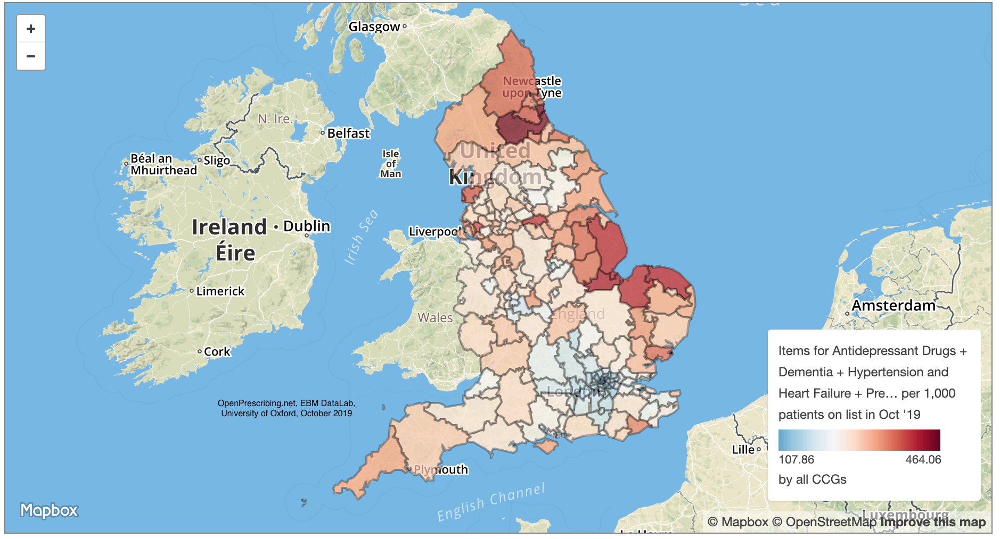

It takes a village
Data Science Campus @ONS
Harriet Sands & Hillary Juma
My Career
Harriet Sands


What we do at the ONS
We apply data science
and build skills
for public good

For a full list of projects see our website:

Opportunities for you
at the Data Science Campus
- MDataGov
- Data Science Accelerator
- DSC courses:
- Fundamentals of Data Science
- The Art of the Possible
Government Data Science Community
Community of practice
groups of people who share a concern, a set of problems, or a passion about a topic, and who deepen their knowledge and expertise in this area by interacting on an ongoing basis
- Wenger et el 2003

“Citizens rely more than ever on cross-agency coordination for good government”
Snyder, W., Wenger, E. and de Sousa Briggs, X., 2004. Communities of practice in government: Leveraging knowledge for performance. PUBLIC MANAGER., 32(4), pp.17-22.
People
Programme
Platforms
Platforms
Community Development Handbook
/